Density vs. Difference
Contents
Density vs. Difference#
We want determine if the number of observations per pixel in the iNaturalis map relates to the difference between the sPlotOpen and iNaturalist map.
This section covers:
Load Data
Count observations per grid cell
Observation density vs. Discrepancy between iNat and sPlotOpen
# packages
import os
import pandas as pd
import numpy as np
import matplotlib.pyplot as plt
import seaborn as sns
import matplotlib.ticker as ticker
Load Data#
Load iNaturalist-TRY data and sPlotOpen community weighted means
iNat_TRY = pd.read_csv("iNat_TRY_log.csv")
iNat_TRY.head(2)
| gbifID | scientificName | decimalLatitude | decimalLongitude | eventDate | dateIdentified | Dispersal unit length | Leaf Area | SLA | Leaf C | ... | Leaf delta15N | Leaf N P ratio | Leaf P | Plant Height | Seed mass | Seed length | Seeds per rep. unit | Stem conduit density | SSD | Conduit element length | |
|---|---|---|---|---|---|---|---|---|---|---|---|---|---|---|---|---|---|---|---|---|---|
| 0 | 1229615436 | Commelina communis | 35.987483 | -79.057546 | 2013-07-07T00:00:00 | 2013-07-07T20:33:11 | NaN | NaN | NaN | NaN | ... | NaN | 2.5362 | 0.536493 | NaN | 2.13771 | NaN | NaN | NaN | NaN | NaN |
| 1 | 3384000233 | Commelina communis | 42.093762 | -75.923660 | 2021-08-23T13:06:06 | 2021-09-17T21:15:37 | NaN | NaN | NaN | NaN | ... | NaN | 2.5362 | 0.536493 | NaN | 2.13771 | NaN | NaN | NaN | NaN | NaN |
2 rows × 24 columns
sPlot = pd.read_csv("sPlotOpen/cwm_loc.csv")
sPlot.head(2)
| PlotObservationID | TraitCoverage_cover | Species_richness | TraitCoverage_pa | Leaf Area | SSD | SLA | Leaf C | Leaf N per mass | Leaf P | ... | Height_shrubs_lowest | Height_herbs_average | Height_herbs_lowest | Height_herbs_highest | SoilClim_PC1 | SoilClim_PC2 | Resample_1 | Resample_2 | Resample_3 | Resample_1_consensus | |
|---|---|---|---|---|---|---|---|---|---|---|---|---|---|---|---|---|---|---|---|---|---|
| 0 | 16 | 0.277778 | 3 | 0.333333 | 3.678311 | -1.047293 | 2.890748 | 6.128157 | 2.873263 | 1.114036 | ... | NaN | NaN | NaN | NaN | -3.66 | 0.546 | True | False | False | True |
| 1 | 17 | 0.038462 | 2 | 0.500000 | 3.678311 | -1.047293 | 2.890748 | 6.128157 | 2.873263 | 1.114036 | ... | NaN | NaN | NaN | NaN | -3.66 | 0.546 | True | False | False | True |
2 rows × 86 columns
Count observations per grid cell#
def global_grid_count(df, long, lat, deg, variables):
# create new dataframe to save the average value of each grid cell and variable
grouped_df = pd.DataFrame()
# convert degree into step size
step = int((360/deg) + 1)
bins_x = np.linspace(-180,180,step)
bins_y= np.linspace(-90,90,int(((step - 1)/2)+1))
# group latitude and longitude coordinates into bins
# create new columns 'x_bin' and 'y_bin'
df['x_bin'] = pd.cut(df[long], bins=bins_x)
df['y_bin'] = pd.cut(df[lat], bins=bins_y)
# raster coordinates are in center of raster cell
df['x_bin'] = df['x_bin'].apply(lambda x: ((x.left + x.right) /2) )
df['y_bin'] = df['y_bin'].apply(lambda x: ((x.left + x.right) /2) )
grouped_df = df.drop_duplicates(subset=['x_bin', 'y_bin'], keep='last')
grouped_df = grouped_df[['x_bin', 'y_bin']]
for v in variables:
sub_df = df[['y_bin', 'x_bin', v]]
# for each lat/lon group get count
grouped_v = sub_df.groupby(['x_bin', 'y_bin'], as_index=False)[v].count()
grouped_df = pd.merge(grouped_df, grouped_v,
on= ['x_bin', 'y_bin'],
how='left')
return grouped_df
# get counts
deg = [2]
trait = iNat_TRY.columns[6:24]
for d in deg:
df_iNat = global_grid_count(iNat_TRY, 'decimalLongitude', 'decimalLatitude', d, trait)
df_sPlot = global_grid_count(sPlot, 'Longitude', 'Latitude', d, trait)
# reshape data, so that we have only one Trait column
df_iNat_t = df_iNat.melt(id_vars=["x_bin", "y_bin"],
value_name="Count_iNat",
var_name="Trait")
df_sPlot_t = df_sPlot.melt(id_vars=["x_bin", "y_bin"],
value_name="Count_sPlot",
var_name="Trait")
# merge sPlot and iNat data into one dataframe
df_merged = pd.merge(df_sPlot_t, df_iNat_t, on=["x_bin", "y_bin", "Trait"] )
# keep only lines where we have a pixel in both datasets
df_merged = df_merged.dropna()
# save result to csv
filename="grid_count_" + str(d) + "_deg.csv"
df_merged.to_csv(filename, index=False)
Compare observation density per grid cell to scaled difference between sPlot and iNaturalist#
Open file that saved the counts per grid cell:
filename="grid_count_2_deg.csv"
counts = pd.read_csv(filename)
counts.head()
| x_bin | y_bin | Trait | Count_sPlot | Count_iNat | |
|---|---|---|---|---|---|
| 0 | -155.0 | 63.0 | Dispersal unit length | 109 | 0 |
| 1 | -155.0 | 69.0 | Dispersal unit length | 66 | 0 |
| 2 | -157.0 | 69.0 | Dispersal unit length | 7 | 2 |
| 3 | -163.0 | 67.0 | Dispersal unit length | 1 | 40 |
| 4 | -157.0 | 65.0 | Dispersal unit length | 1 | 13 |
Load grid cell means at 2 degree resolution:
filename="grid_means_2_deg.csv"
means = pd.read_csv(filename)
means.head()
| x_bin | y_bin | Trait | TraitValue_sPlot | TraitValue_iNat | |
|---|---|---|---|---|---|
| 0 | -157.0 | 69.0 | Dispersal unit length | 0.872919 | 1.898598 |
| 1 | -163.0 | 67.0 | Dispersal unit length | 1.282093 | 1.265103 |
| 2 | -157.0 | 65.0 | Dispersal unit length | 1.267266 | 1.079049 |
| 3 | -153.0 | 65.0 | Dispersal unit length | 1.326229 | 1.485913 |
| 4 | -147.0 | 69.0 | Dispersal unit length | 0.747151 | 0.876784 |
Normalize grid cell averages:
def quantile_norm(df, s1, s2, variables):
# empty data frame to save output:
df_norm = pd.DataFrame()
for v in variables:
# make subset df
sub_exp = df[df['Trait']==v]
sub_exp[s1] = np.exp(sub_exp[s1].copy())
sub_exp[s2] = np.exp(sub_exp[s2].copy())
# determine min and max values
min_quantile = sub_exp[s1].quantile(0.05)
max_quantile = sub_exp[s1].quantile(0.95)
if min_quantile > sub_exp[s2].quantile(0.05):
min_quantile = sub_exp[s2].quantile(0.05)
if max_quantile < sub_exp[s2].quantile(0.95):
max_quantile = sub_exp[s2].quantile(0.95)
sub_exp[s1] = sub_exp[s1].apply(lambda x: (x - min_quantile)/(max_quantile - min_quantile))
sub_exp[s2] = sub_exp[s2].apply(lambda x: (x - min_quantile)/(max_quantile - min_quantile))
df_norm = pd.concat([df_norm, sub_exp])
return df_norm
# normalize original values (exp of ln-values):
pd.options.mode.chained_assignment = None
means = quantile_norm(means, "TraitValue_sPlot", "TraitValue_iNat", trait)
means.head()
| x_bin | y_bin | Trait | TraitValue_sPlot | TraitValue_iNat | Difference | |
|---|---|---|---|---|---|---|
| 0 | -157.0 | 69.0 | Dispersal unit length | 0.133789 | 0.777220 | 0.643432 |
| 1 | -163.0 | 67.0 | Dispersal unit length | 0.315624 | 0.306502 | 0.009122 |
| 2 | -157.0 | 65.0 | Dispersal unit length | 0.307655 | 0.216120 | 0.091535 |
| 3 | -153.0 | 65.0 | Dispersal unit length | 0.340059 | 0.438045 | 0.097986 |
| 4 | -147.0 | 69.0 | Dispersal unit length | 0.091284 | 0.135182 | 0.043898 |
# calculate absolute difference
means['Difference'] = abs(means['TraitValue_iNat'] - means['TraitValue_sPlot'])
means = pd.merge(means, counts, on = ['x_bin', 'y_bin', 'Trait' ])
Remove outliers:
import scipy.stats as stats
z_scores = stats.zscore(means['Difference'])
abs_z_scores = np.abs(z_scores)
filtered_entries = (abs_z_scores < 3)
means = means[filtered_entries]
Plot distribution of the difference between iNautralist and sPlotOpen in each respective cell:
fig,ax = plt.subplots(figsize=(5,5))
plt.hist(means["Difference"], range=[0, 2], color="midnightblue")
plt.title("Absolute difference distribtution")
ax.set(xlabel = "Absolute scaled difference (iNat - sPlotOpen)", ylabel="frequency")
plt.savefig('../Figures/Absolute_difference_distribtution.pdf', bbox_inches='tight')
fig,ax = plt.subplots(figsize=(2,5))
plt.boxplot(means["Count_iNat"])
plt.title("Cell Counts iNaturalist")
ax.set_yscale('log')
plt.savefig('../Figures/Dist_cell_counts.pdf', bbox_inches='tight')

We bin all grid cells by the number of observations they hold. Each bin is defined by the 25% quantiles in the dataset. We can see that the cells in the first bin have only a maximum of 20 observations and exhibit a greater discrepancy from sPlotOpen.
# define 25% quantile bins
means['Counts per grid cell'] = pd.cut(means['Count_iNat'], bins=[0
,means['Count_iNat'].quantile(0.25)
,means['Count_iNat'].quantile(0.50)
,means['Count_iNat'].quantile(0.75)
,means['Count_iNat'].quantile(1)])
fig,ax = plt.subplots(figsize=(7,5))
sns.barplot(x='Counts per grid cell', y='Difference', data=means, ax=ax, color="midnightblue", errcolor = "red")
ax.set(xlabel = "Counts per grid cell in 25% quantiles", ylabel="Absolute difference (iNat - sPlotOpen)")
ax.set(title= "iNat Counts vs. absolute Difference")
plt.savefig('../Figures/diff_vs_counts_all.pdf', bbox_inches='tight')
For each trait individually:
for t in trait:
sub = means[means['Trait']==t]
sub['Counts per grid cell'] = pd.cut(sub['Count_iNat'], bins=[0
,sub['Count_iNat'].quantile(0.25)
,sub['Count_iNat'].quantile(0.50)
,sub['Count_iNat'].quantile(0.75)
,sub['Count_iNat'].quantile(1)])
fig,ax = plt.subplots(figsize=(7,5))
sns.barplot(x='Counts per grid cell', y='Difference', data=sub,
ax=ax, color="midnightblue", errcolor = "red").set(title=t)
ax.set(xlabel = "Counts per grid cell in 25% quantiles", ylabel="Difference (iNat - sPlotOpen)");
 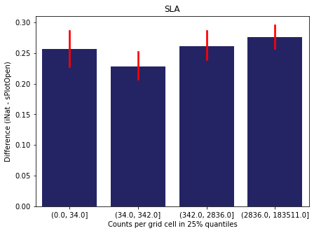
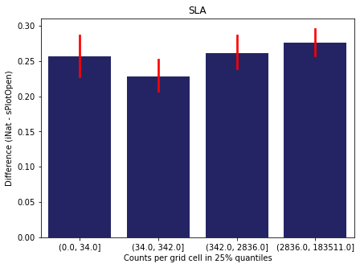
 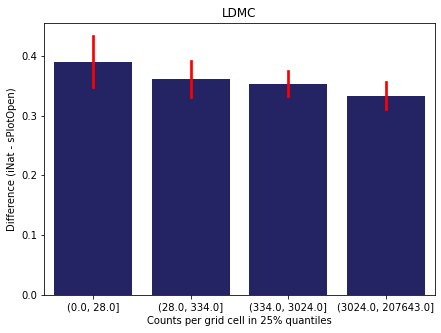
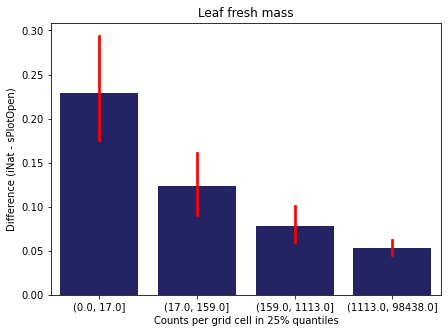
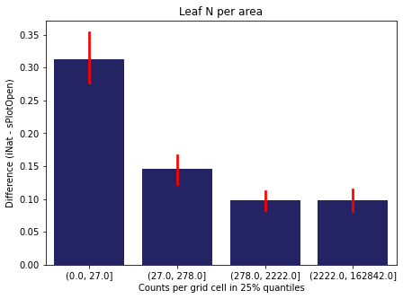
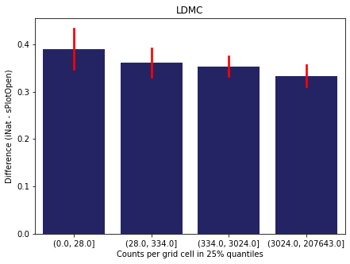
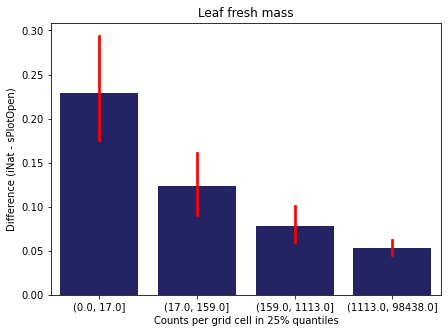
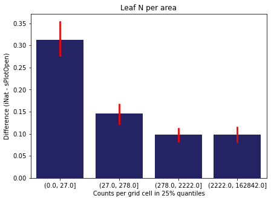


 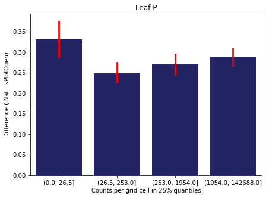
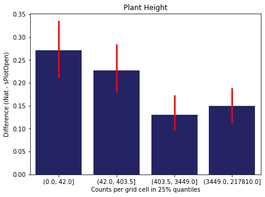
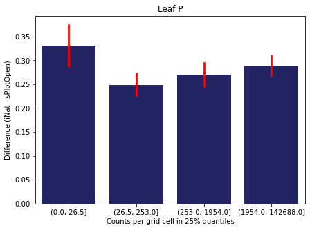
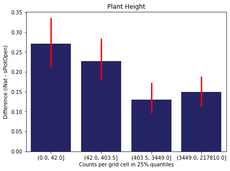
 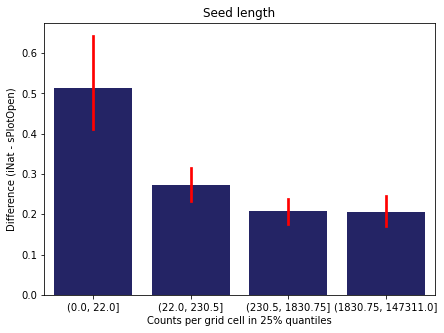
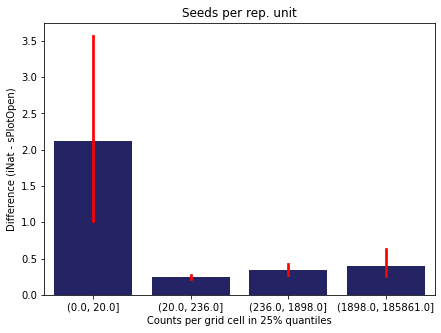
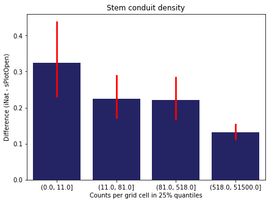
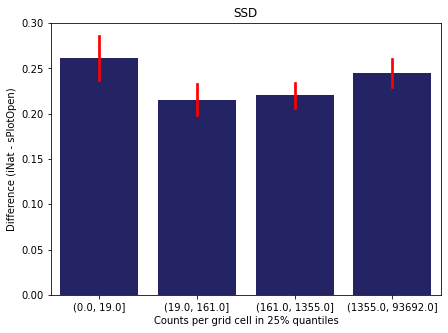
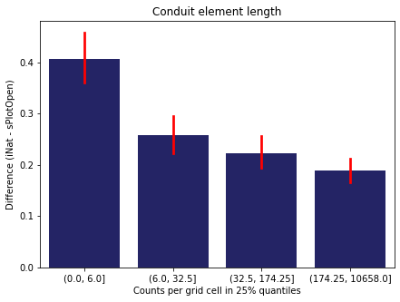
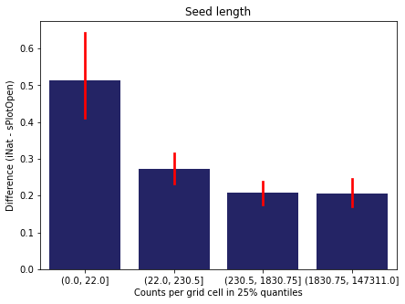
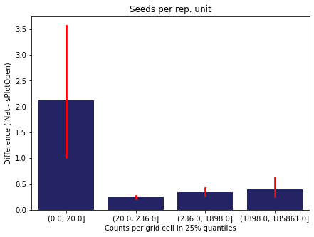
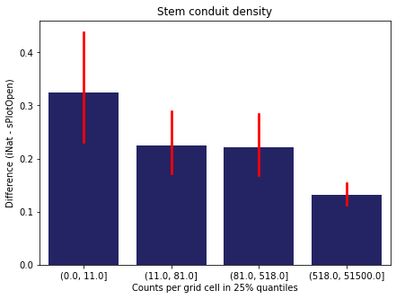
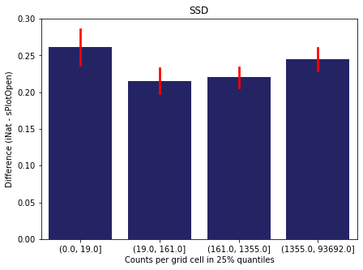
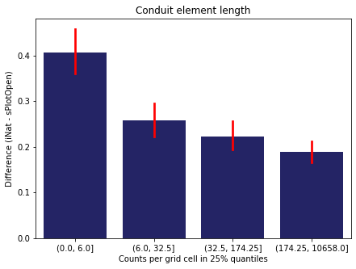
Same plot for sPlotOpen plot count
means['Counts per grid cell'] = pd.cut(means['Count_sPlot'], bins=[0
,means['Count_sPlot'].quantile(0.25)
,means['Count_sPlot'].quantile(0.50)
,means['Count_sPlot'].quantile(0.75)
,means['Count_sPlot'].quantile(1)])
fig,ax = plt.subplots(figsize=(7,5))
sns.barplot(x='Counts per grid cell', y='Difference', data=means, ax=ax, color="midnightblue", errcolor = "red")
ax.set(xlabel = "Counts per grid cell in 25% quantiles", ylabel="Difference (iNat - sPlotOpen)")
plt.savefig('../Figures/diff_vs_counts_sPlot.pdf', bbox_inches='tight')